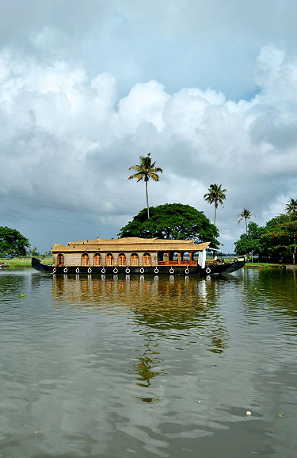
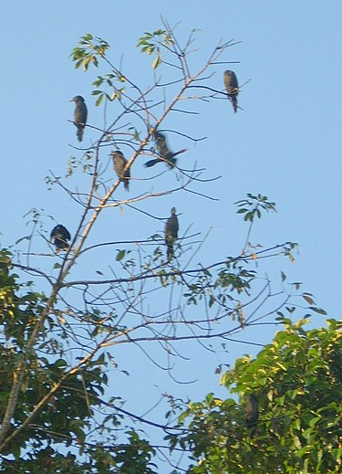

tourist spots: Illickal Kallu

Vembanad

Kumarakom Bird Sanctuary

Kottayam (കോട്ടയം)is a city in the Indian state of Kerala.[1] Kottayam literally means the interior of a fort—Kotta + Akam.[2] Flanked by the Western Ghats on the east and the Vembanad Lake and paddy fields of Kuttanad on the west, Kottayam is a place that is known for extraordinary qualities.[3] It is the district headquarters of Kottayam district, located in south-west Kerala. Kottayam is located in the basin of the Meenachil River at an average elevation of 3 metres (9.8 ft) above sea level, and has a moderate climate. It is located 150 kilometres (93 mi) north of the state capital Thiruvananthapuram.
The city is known for its trade in natural rubber, and the national Rubber Board is headquartered in the city, as is the Plantation Corporation of Kerala. Kottayam Port is India's first multi-modal inland container depot. The headquarters of the Malankara Orthodox Syrian Church, called the Catholicate Aramana (Catholicate palace), is situated at nearby Devalokam.[not verified in body]
Many of the first Malayalam daily newspapers, like Deepika, Malayala Manorama, and Mangalam, were started and are headquartered in Kottayam, as are a number of publishing houses.
area: 2208 sq.km
population:1,974,551